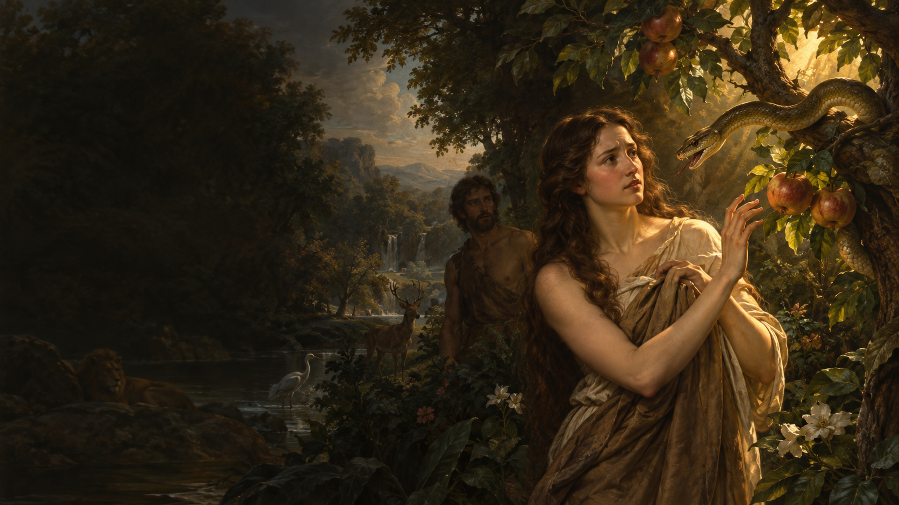
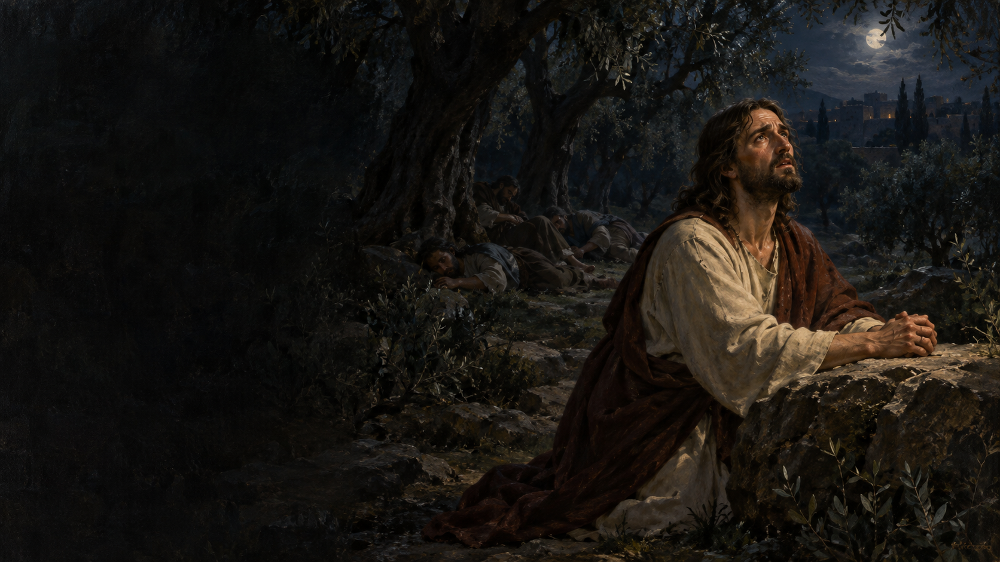
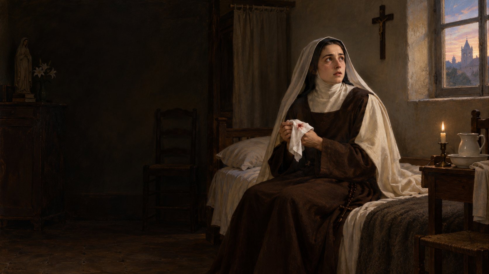

Abrir con una necesidad humana: querer que todo salga bien. Presentar la pregunta central sin resolverla aún.
El deseo de estar a salvo02 / 21
Una promesa atractiva
Si conozco la clave, quizá pueda asegurar mi vida.
Salud. Amor. Futuro. Sentido.
Reconocer por qué atrae esta promesa. Rogelio puede añadir un recuerdo personal real de su búsqueda anterior sin inventar detalles.

Génesis 3,1–603 / 21
El primer jardín
¿Y si Dios te está ocultando algo bueno?
Paráfrasis de la insinuación de la serpiente
Leer Génesis 3,1–6. La frase visible es una paráfrasis, no una cita literal. La tentación introduce sospecha sobre la bondad de Dios.
Antes del fruto04 / 21
La grieta
La sospecha llegó primero.
El fruto vino después.
«Dejó morir en su corazón la confianza hacia su creador.»
Catecismo de la Iglesia Católica, 397
El Catecismo sitúa el quiebre en la confianza. No se condena el deseo de crecer, sino buscar plenitud sin Dios, antes que Dios y no según Dios.
Una relectura gnóstica05 / 21
La misma historia, contada al revés
La serpiente instruye. El creador impide.
En ciertos relatos, no en todos
La hipóstasis de los arcontes presenta a la serpiente como instructora. Ireneo describe doctrinas relacionadas. Distinguir esta relectura del Génesis bíblico y de otras corrientes gnósticas.
¿Quién merece mi confianza?06 / 21
Un jardín · dos lecturas
Cambian los papeles. Cambia la respuesta.
Génesis
La serpiente siembra desconfianza hacia Dios.
Algunos textos gnósticos
La serpiente despierta un conocimiento oculto.
La diferencia es quién aparece como digno de confianza. El contraste tiene base en textos concretos, no describe todo el gnosticismo.
De lo antiguo a lo moderno07 / 21
La promesa cambia de idioma
La clave de la plenitud está escondida.
Conocimiento secreto
Leyes espirituales
Conciencia y energía
Raíces, ecos y mezclas: no una cadena idéntica.
El documento vaticano sobre Nueva Era describe raíces esotéricas y gnósticas y menciona la teosofía de Blavatsky. Una afinidad real no significa que todos enseñen lo mismo.
Un procedimiento para el futuro08 / 21
La promesa actual
Aprende la clave. Practica. Obtén el futuro deseado.
¿Es una relación con Dios… o una técnica para conseguir algo?
Hablar de propuestas que atribuyen al estado interior poder sobre circunstancias externas. No atribuir esta promesa a toda meditación o búsqueda de bienestar.
La ley de la atracción09 / 21
The Secret
Tus pensamientos atraen lo que llega a tu vida.
Ésa es su propuesta; no una ley científica demostrada.
La página oficial de The Secret sostiene que pensamientos atraen objetos, personas y experiencias. Distinguir la afirmación de su evidencia científica.
Ejemplos contemporáneos10 / 21
Tres lenguajes de una búsqueda
¿Qué espero producir con mi interior?
The Secret
Pensamientos que atraen circunstancias.
Joe Dispenza
Intención y emoción para crear una realidad.
Metafísica popular
Leyes mentales con lenguaje espiritual.
Son propuestas diferentes. The Secret, el libro Deja de ser tú y la tradición de Conny Méndez ilustran formas concretas de esta pregunta. No presentar sus afirmaciones como ciencia comprobada.
El detalle más sutil11 / 21
También dicen «suelta»
Entrega el cómo. Conserva el resultado imaginado.
La tensión en el planteamiento de Dispenza
En The Balance Between Intention and Surrender, Dispenza propone intención y emoción elevadas, luego entregar el modo de realización. Preguntar si también se entrega el resultado.
La pregunta incómoda12 / 21
¿Qué estoy entregando realmente?
¿Mi futuro… o sólo la manera de conseguirlo?
También puedo convertir mi oración en un trato.
Aplicar la pregunta a nosotros, incluso sin practicar New Age: puedo decir hágase tu voluntad mientras espero que esa frase obligue a Dios a darme el resultado.

Marcos 14,32–4213 / 21
El segundo jardín
Jesús no finge tranquilidad.
Siente angustia. Pide compañía. Ora.
Leer Marcos 14,32–42. Jesús expresa deseo y angustia, los discípulos duermen. La confianza no llega después de eliminar el miedo.
La oración de Jesús14 / 21
Primero habla con verdad
Pide que pase el cáliz.
No niega lo que desea.
«Pero no sea como yo quiero, sino como tú quieres».
Marcos 14,36
Después se levanta y camina.
La entrega no borra el deseo ni vuelve inmóvil a Jesús. Benedicto XVI conecta este sí del Hijo con el no de Adán y Eva.
Una frase para recordar15 / 21
Dos jardines
Sentirse bien no prueba que confío.
Edén
Abundancia. Desconfianza.
Getsemaní
Angustia. Confianza.
En Edén, la abundancia no impide desconfiar. En Getsemaní, la angustia no impide confiar. Es una lectura teológica del contraste.

Lisieux · Pascua de 189616 / 21
Teresita de Lisieux
Primero, sangre. Después, la oscuridad.
La enfermedad llegó. Luego comenzó una gran prueba de la fe.
En la Pascua de 1896 aparecen signos de tuberculosis. Teresita primero los relaciona con su esperado encuentro con Jesús; después vive una prolongada noche de la fe.
La noche de la fe17 / 21
Cuando el cielo se oscurece
No sólo perdía la salud. Dejaba de sentir cercano el cielo.
Su fe entró en combate con la posibilidad de la nada.
C’est la confiance llama a esta experiencia prueba contra la fe. No equivale a una simple ausencia de emoción agradable en la oración ni a una decisión de abandonar la fe.
Fe sin consuelo18 / 21
Teresita, Manuscrito C
Canto lo que quiero creer.
Síntesis del pasaje, no cita literal
El consuelo desapareció. El amor permaneció.
Teresita escribió que cantaba la alegría del cielo sin sentirla. Su fe no era una técnica para producir consuelo instantáneo.
Carta del 17 de septiembre de 189619 / 21
Ella también habló del cáliz
La confianza no exige entusiasmo por sufrir.
Teresita recuerda a Jesús pidiendo que pase el cáliz.
En su carta a María del Sagrado Corazón, Teresita dice que sus deseos espirituales no fundamentan su confianza y recuerda la tristeza de Jesús ante el sufrimiento.
La pregunta para nosotros20 / 21
Ahora, nosotros
¿Qué espero que Dios me garantice?
Si no sucede como quiero, ¿seguiré confiando en Él?
Dar un momento de silencio. Escuchar lo que surja en el grupo. La pregunta invita a examinar la propia oración, no a evaluar las prácticas de otros.
Para llevarnos hoy21 / 21
Confiar sin controlar
Vivir como hijo, aun sin controlar el final.
¿Busco a Dios… o una garantía?
Señor, enséñame a pedir con verdad y a confiar sin exigirte el desenlace. Amén.
Cerrar retomando Edén, Getsemaní y Teresita. Leer la oración sólo si encaja con el grupo; terminar sin otra dinámica.